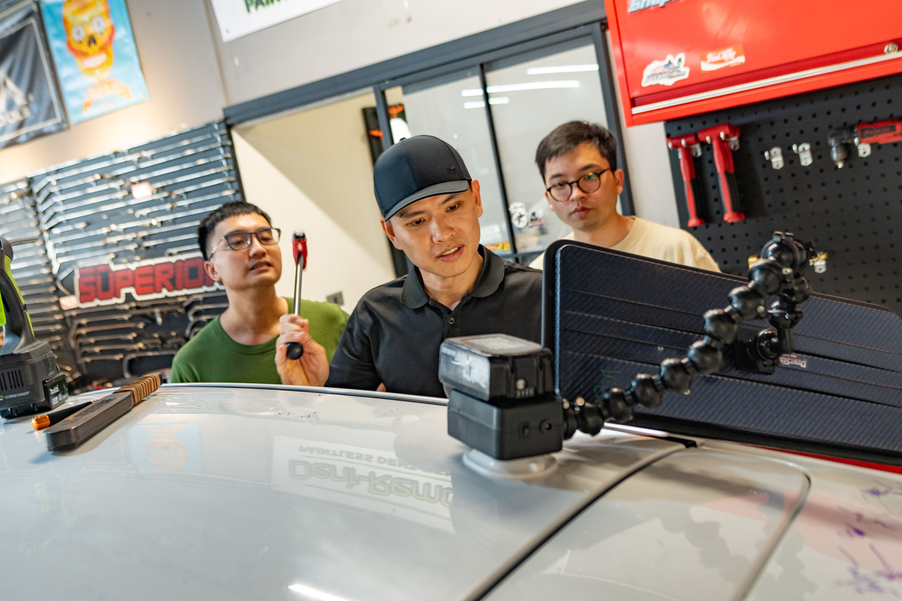
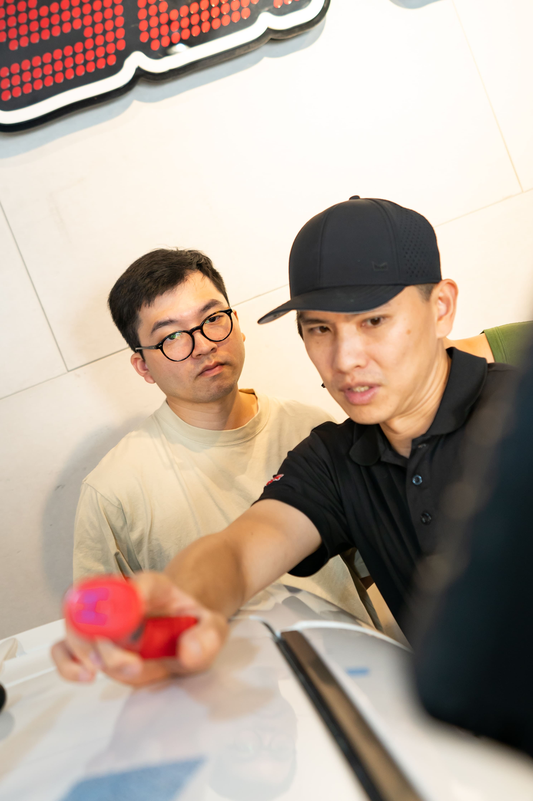
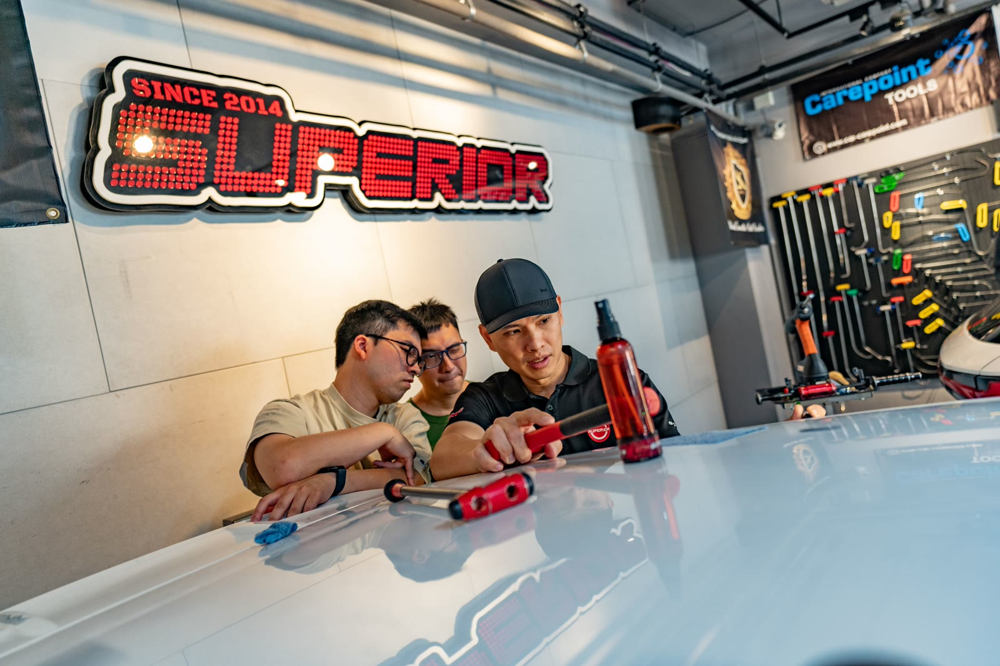
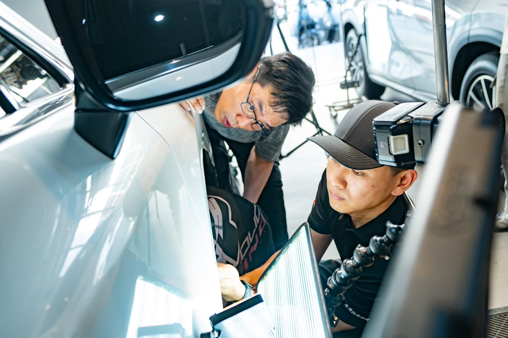
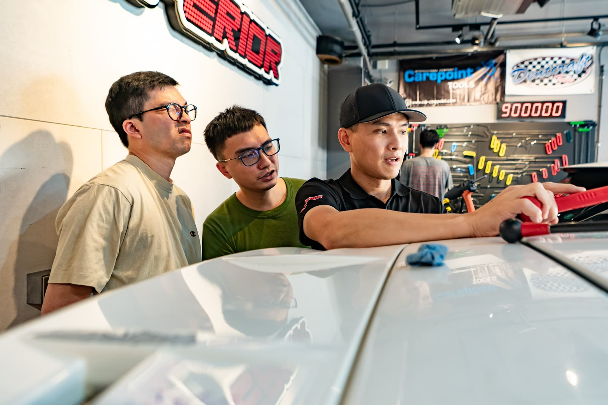
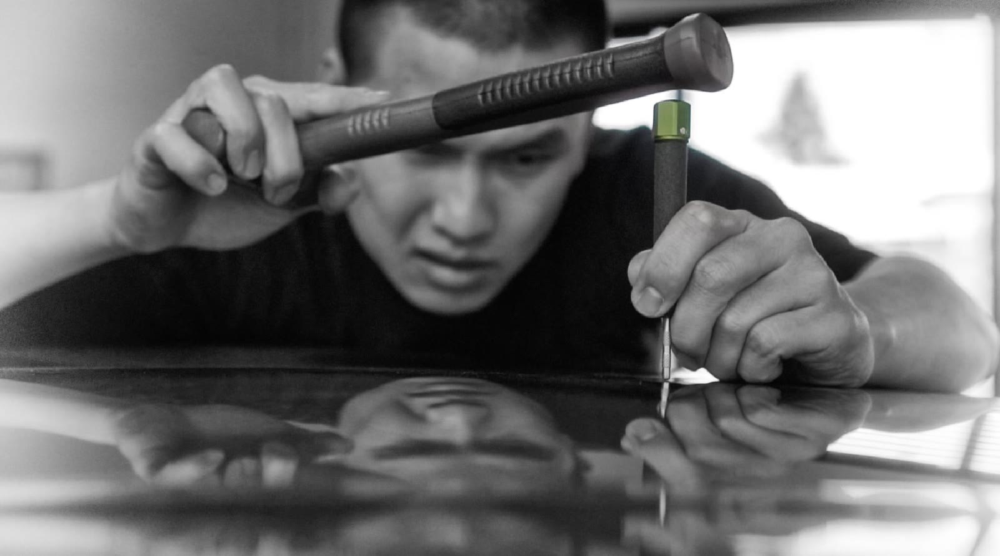
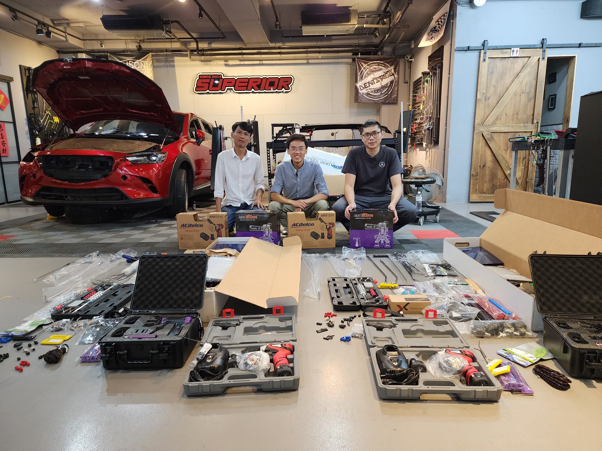
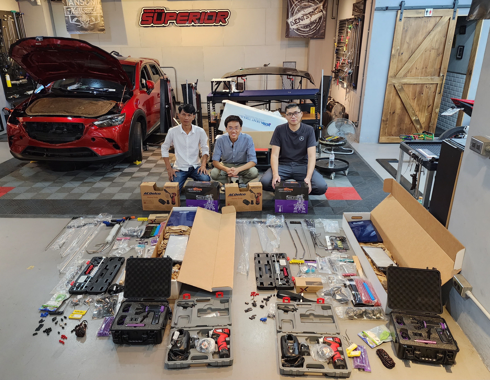

從推桿認識、燈板角度判讀到連續凹痕修復，12天紮實訓練讓您建立完整的PDR技術根基。最多一對二，教官全程陪同，以學員進度為優先。
如果想成為一個凹痕技師，中階課程對您來說非常重要。在這個課程裡，我們將培養您好的維修習慣——PDR需要時間與經驗的累積，養成好的觀念與習慣，是成為技師最關鍵的基礎。
我們不僅教您如何修，還會教您各種實用理論，利用原則、原理、現象三要素來處理凹痕。您將學到如何找到各種通道，使用更多工具完成凹痕，利用冷熱膠拉拔處理凹痕，最終完成困難的線條狀凹痕。80%的訓練時間，都在告訴您保持凹痕區域的清晰有多重要——沒有任何凸點與凹點，適當控制力道，讓板金平整，才是真正的修復品質。



無論您是計劃轉職、尋找副業收入，還是對汽車修復有熱情，中階技術訓練都能讓您在兩週內從零開始，建立真正可以賺錢的技術。
已在汽車業工作，想增加服務項目與收費能力，PDR 是最高毛利的增值技術之一。
自己的車自己修，或純粹對這門技藝著迷。在真實環境中學習，感受 PDR 的成就感。
來自亞洲各地的學員皆可報名，課程以中文為主，亦可視需求提供英文補充說明。
先以中階訓練評估自己的適性與熱情，再決定是否升讀完整4週課程，是聰明的學習策略。
中階課程的核心在於建立正確觀念與手感。我們強調原則、原理、現象三要素的應用，讓您遇到任何凹痕都能找到對應的處理策略。
深入理解凹痕成因的「火山口理論」——金屬在受衝擊後的形變結構，是所有修復判斷的根本依據。
了解金屬板金在修復過程中的收縮特性，以及連鎖效應對周圍板件的影響，學會預判與應對。
學習冷熱膠拉拔（Glue Pull）技術，在推桿無法到達的區域利用膠頭從外部拉出凹痕，擴展修復工具的使用範圍。
精確找到各種板件結構中的槓桿施力點，善用物理原理讓修復更省力、更精準，減少二次損傷風險。
處理位於車門加強鋼樑、車頂橫樑等結構性位置的凹痕，這些位置因金屬強度高，需要特殊工具與技法應對。
線條凹痕（creases）是PDR中難度最高的類型之一，需要精確的力道控制和正確的推敲順序，此單元大量練習奠定技法基礎。
力道的精準控制是PDR最核心的技能。學習如何保持凹痕修復區域的清晰，避免任何凸點或凹點，讓板金平整如初。
從練習到完整完成一個線條凹痕的修復流程。掌握最後10%的精修技巧，將修復品質提升到專業技師等級。
引擎蓋為面積最大、最常受損的板件，綜合運用所有課程技法，以引擎蓋實車作為最終整合練習與結業評量。
中階技術訓練的費用涵蓋所有訓練期間所需資源，讓您專心學習，不需另外採購任何工具或材料。
訓練期間免費借用卓越所有推桿、燈板、膠拉工具及輔助設備，無需自行購買。
提供充足的實車面板練習材料，讓學員在接近真實的環境中反覆練習，不受時間限制。
卓越的教學與營業空間完全分開，您有專屬的學習環境，不受門市客戶干擾。
完成課程並通過評量後，頒發卓越PDR國際認可的結業證書，證明您的技術資歷。
結業後可透過 LINE 向教官提問，畢業生永久享有技術諮詢支援，不因課程結束而中斷。
課程依學員進度靈活調整，若特定技法需要更多練習時間，教官會優先確保您確實掌握後再推進。
卓越凹痕修復的教學訓練空間與日常營業門市完全分開，您的每一天訓練都在不受外部干擾的專屬環境中進行。使用與美國、日本、歐洲頂尖訓練學校相同等級的工具，讓您學到的技術與世界接軌。



從基礎推桿到最新進階工具，與國際訓練學校同款配備。
訓練空間與門市完全分離，保障每位學員不受干擾的學習品質。
以真實車輛面板作為練習素材，完整模擬客戶車輛作業情境。
PDR資歷12年，Vale Master Craftman認證，曾赴美國 Dent Time 及日本 Dentshop 深造，卓越訓練中心最資深駐店技術主管。
前台灣板金國手——全國技能競賽汽車鈑金金牌、45 屆國際技能競賽汽車鈑金銀牌，VALE Master Craftman 認證，學習速度極快。
每一梯最多兩位學員，教官全程在旁指導。從理論板書到實車操作，卓越的每一堂課都是高強度、高品質的學習體驗。


結業時帶走完整工具組，立即投入工作
「從完全不懂到能夠獨立接案，兩週改變了我的職涯方向。Jay 教官非常有耐心，每個動作都不厭其煩地指導。」
「教學環境非常專業，工具設備齊全，練習素材充足。最讓我感動的是教官在課後仍然持續回答我的問題。」
「原本在考慮報名其他學校，但卓越一對二的小班制真的是最大優勢。幾乎等同於私人教練，進步速度非常快。」
完成中階訓練後，可升讀完整4週課程掌握進階技法，或參加國際研討會接觸世界級技術。